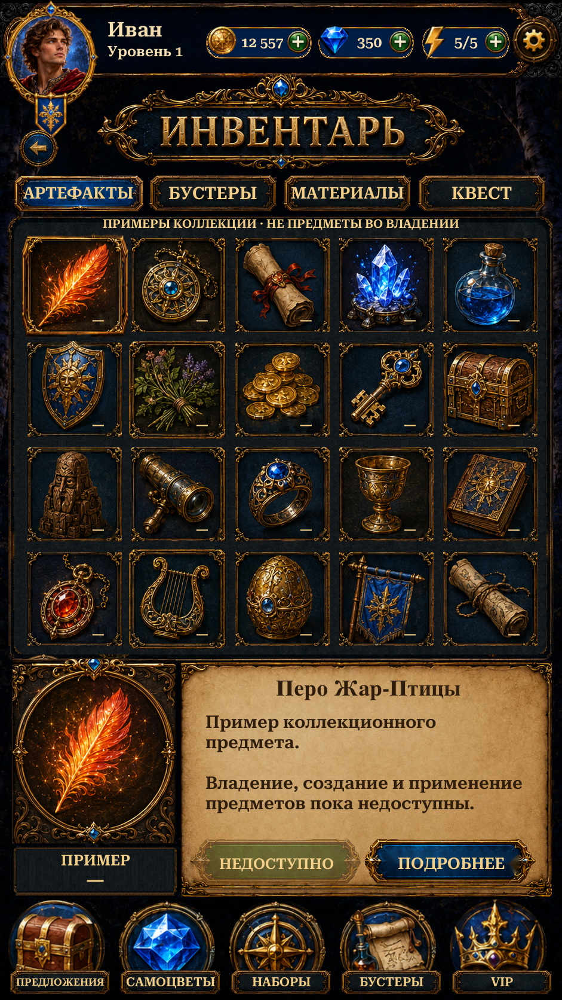

Visual Page27 · Inventory
Source-derived title,20 collectible illustrations, feather detail and action panels. Native categories, item selection, real saved booster quantities and guarded navigation.
Implementation and checks · Reference differences · Asset provenance · Scenario cost

Actual Unity Play Mode ·941×1672·Russian·isolated test save.25 distinct targeted Unity checks passed, including Profile/Mail regressions. Final8 Inventory checks passed after visual corrections.14 final Inventory captures. Scenario:25 source-isolation jobs and one bounded paper repair, 88CU.
Collectibles, materials and quest objects are labelled previews. Actual booster quantities are shown separately. Viewing items consumes nothing; inventory Use and VIP are unavailable. No APK or physical-phone verification. Shared scenery, panels and typography still differ from the original.